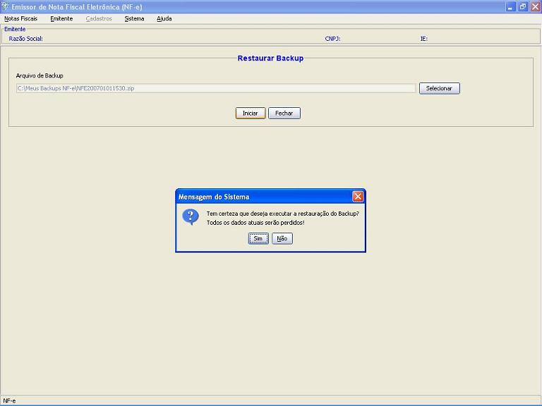

Software Emissor NF-e
Backup e Restauração dos dados
Como medida de segurança contra a perda de dados, o software
apresenta as funções de Backup e
Restauração de TODOS os dados do aplicativo.
Backup:
O Backup
é o processo de cópia dos dados para posterior
recuperação, caso haja necessidade ou problemas
com os dados originais.
No Software Emissor NF-e, o backup
realizará uma cópia total dos dados de todos os
Emitentes, suas NF-e's, Cadastros, etc.
Para realizar o Backup:
Observação:
-Nenhum emitente poderá estar
inciado.
- Acessar o menu: Sistema -> Backup
- Selecionar o
local para o Backup
clicando no botão Selecionar
e escolhendo o diretório onde o arquivo de Backup
será gerado.
- Clicar em Iniciar. Confirmar e
aguardar o processamento. O backup
será gerado no diretório selecionado e o Software
informará a conclusão do Backup.
Confirmar:
Aguardar o processamento:
O Software
informará do sucesso da operação:
Arquivo de Backup:
Formato: .zip
Nomenclatura gerada pelo Software: NFE + ANO + MÊS + DIA +
HORA + MINUTO .zip
Exemplo: backup gerado no dia 01/01/2007 às 15:30hs -
Nomenclatura: NFE200701011530.zip
Exemplo do
arquivo de backup:
Restauração:
O processo de
Restauração é a volta dos dados
contidos no arquivo de Backup.
Na
restauração, TODOS os dados atuais são
excluídos e os dados do Backup
inseridos, de forma que o Software retorna para o estado do
período do Backup.
É o método também utilizado caso
ocorra perda dos dados originais. Entretanto, as
autorizações, denegações ou
cancelamentos realizados que NÃO estão contidos
no Backup,
mas estão na respectiva SEFAZ não
poderão ser retornados.
Para realizar a
restauração dos dados:
Observação:
-Nenhum emitente poderá estar
inciado.
- Acessar
o menu: Sistema
-> Restaurar
- Selecionar o
arquivo do Backup clicando
no botão Selecionar
e escolhendo o arquivo.
- Clicar em Iniciar.
- Confirmar a
restauração de dados, com a conseqüente
perda dos dados atuais

- O Software irá
realizar a restaruração de dados a partir do
arquivo de Backup
e informará o sucesso da operação
Aguardar o processamento:
O Software informará do sucesso da operação: